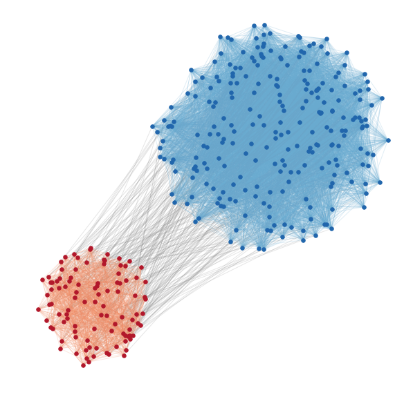

dynamicalab.drawing.clustered_layout¶
-
dynamicalab.drawing.clustered_layout(G, groups, centroids, radius_scale=None)[source]¶ This function constructs a layout where nodes are sampled in circles around centroids of groups.
Parameters
- G : Networkx Graph
- A Networkx
GraphorDiGraph. - groups : list of lists
- A list of groups of nodes. Each element of groups must be a list of
node_id. - centroids : list of lists
- Position of the centers of the groups
- radius_scale : list of float : (default=None)
- Scaling of the radius for each group. If None, then the scaling is equal to 1 for all groups. Smaller scaling increases the nodes density.
Returns
- dict
- Dictionary of positions that can be use directly with
draw_networks. Each key is anode_id(fromgroups) and the value is a position[x,y]. - list of edges
- Split of edges between each group. Makes the plot much simpler. Check the example.
Raise
ValueError- Occurs if
groupsdoes not contain all nodes (low criterion).
Example
import numpy as np import matplotlib.pyplot as plt import networkx as nx import dynamicalab.drawing as draw # Generate a network pin = [0.05, 0.2] pout= 0.003 sizes = [100,250] G = nx.random_partition_graph(sizes, 0.25, 0.01) node_subsets = [range(0,sizes[0]), range(sizes[0], sizes[0]+sizes[1])] centroids = [(0,0), (4,4)] radius_scale = [0.02,0.03] # Get layout pos, edge_bunchs = draw.clustered_layout(G, node_subsets, centroids, radius_scale) # Draw plt.figure(figsize=(10,10)) node_colors = ['#b2182b', '#2166ac'] for i, nodes in enumerate(node_subsets): nx.draw_networkx_nodes(G, pos=pos, node_size=30, nodelist=nodes, node_color=node_colors[i]) colors = ['#bdbdbd', '#bdbdbd', '#67a9cf', '#ef8a62'] for i, edges in enumerate(edge_bunchs): nx.draw_networkx_edges(G, pos=pos, alpha=0.2, edgelist=edges, edge_color=colors[i]) plt.axis("off")